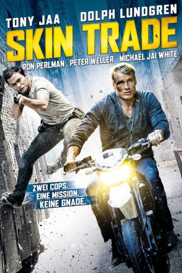
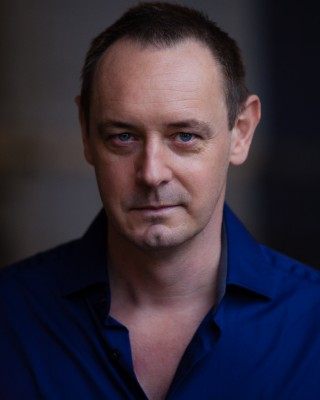
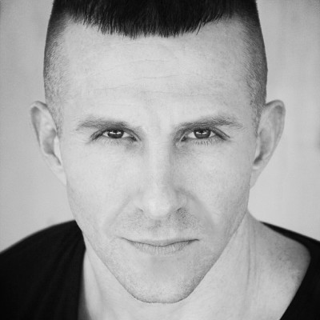

#1272 Skin Trade
 gesehen am 25.06.2015
gesehen am 25.06.2015
 
 IMDB-Wertung: 5.7 / 10
IMDB-Wertung: 5.7 / 10  Metascore: 39
Metascore: 39 
Der harte New Yorker Polizist Nick (Dolph Lundgren) ist einem russischen Mob auf den Fersen, der im großen Stil Menschenhandel betreibt. Doch seine Nachforschungen bleiben nicht unbemerkt, was für seine Familie verheerende Folgen hat: Der brutale Gangsterboss Viktor Dragovic (Ron Perlman) ermordet auf entsetzliche Weise seine Frau und seine Tochter. Nick entkommt gerade so dem Tod, doch dieses Versäumnis wird den Gangstern noch teuer zu stehen kommen: Getrieben von Rache folgt er dem Anführer der Kriminellen bis nach Bangkok, wo er unerwartet Hilfe von dem einheimischen Cop Tony Vitayakui (Tony Jaa) bekommt. Zusammen wollen sie den Gangstern das Handwerk legen. Als es zum großen Showdown kommt, muss Nick entscheiden, wer Freund und Feind ist. Währenddessen wird der FBI-Agent Eddie Reed (Michael Jai White) auf Nick angesetzt.
Jahr: 2014
Dauer: 96 Minuten
FSK: 16
Land: Thailand Studio: Ascot Elite Entertainment GroupTonspuren: DTS - ,
Untertitel: Deutsch, Englisch,
Auflösung: 1080p (1920x800) Größe: 4976 MB
Genre: Action, Krimi, Thriller
Regisseur: Ekachai Uekrongtham
Drehbuch: Dolph Lundgren, Steven Elder, Gabriel Dowrick, Dolph Lundgren, John Hyams
Soundtrack: Jacob Groth
Darsteller:
 Dolph Lundgren als Nick Cassidy
Dolph Lundgren als Nick Cassidy Tony Jaa als Tony Vitayakul
Tony Jaa als Tony Vitayakul Michael Jai White als Reed
Michael Jai White als Reed Ron Perlman als Viktor
Ron Perlman als Viktor Celina Jade als Min
Celina Jade als Min Peter Weller als Costello
Peter Weller als Costello Sahajak Boonthanakit als Kong
Sahajak Boonthanakit als Kong Mike Dopud als Goran
Mike Dopud als Goran- Leo Rano als Janko
- Tasya Teles als Rosa Cassidy
- Chloe Babcook als Sofia Cassidy
 Gigi Velicitat als Kuzman
Gigi Velicitat als Kuzman Cary-Hiroyuki Tagawa als Senator Khat
Cary-Hiroyuki Tagawa als Senator Khat Michael Adamthwaite als Detective Monroe
Michael Adamthwaite als Detective Monroe Patrick Sabongui als Detective Russell
Patrick Sabongui als Detective Russell- Manu Bhardwaj als Doctor
-  Steven Elder als The Attorney
 Johnson Phan als
Johnson Phan als - Manel Soler als Kuzman's bodyguard
 Conan Stevens als Igor
Conan Stevens als Igor- Maythavee Weiss als Baby Doll's Dancer
- James Chalke als Maître D' , uncredited
- Natalie Lorence als The Reporter , uncredited
-  Eoin O'Brien als Russian Stud , uncredited
- Anteo Quintavalle als Russian Stud , uncredited
- Jenny Sandersson als SWAT , uncredited
- Matthew James Ryder als Pongchai
- David Westerman als Ivan
- Michael G Selby als Andre
- Tayme als Nung
- Hugh Brammar als Diplomat
- Aratchaporn Sathet als Haggard Woman
- Amirhossein Zargham Borojeni als Skipper
- Napat Matchakua als Thip
- Tony Skarberg als NJPD Sniper
 Bryce Hodgson als Dex
Bryce Hodgson als Dex- Praepailin Ruengsri als Older Girl in Warehouse
- Thipwara Jaikwang als Warehouse Girl
- John Luongo als SWAT Team Leader
- Anika Krav als Russian girl
- Viktor Krav als Bar drunkard
- Niko Rusakov als Bodyguard
- Markus Waldow als Police Officer
- Alexander Winters als Viktor's Bodyguard
Datei: X:\2014(N-Z)\Skin Trade (2014, FSK16, 1920x800).mkv seit 12.06.2015
Festplatte: HD 2013(I-Z)-2014(A-Z)
 Es gibt insgesamt 163 Filme in der Gruppe '2014(N-Z)'
Es gibt insgesamt 163 Filme in der Gruppe '2014(N-Z)'